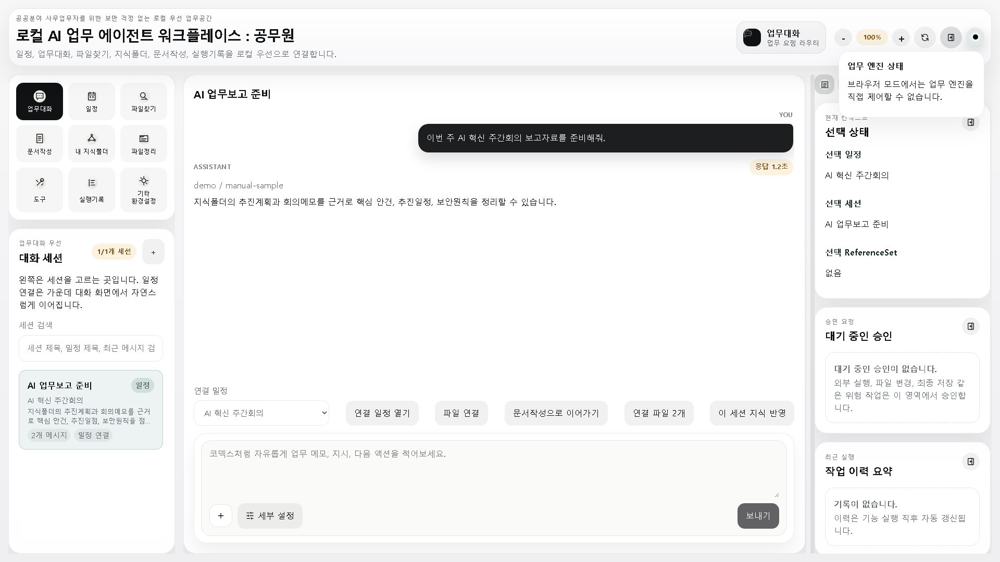
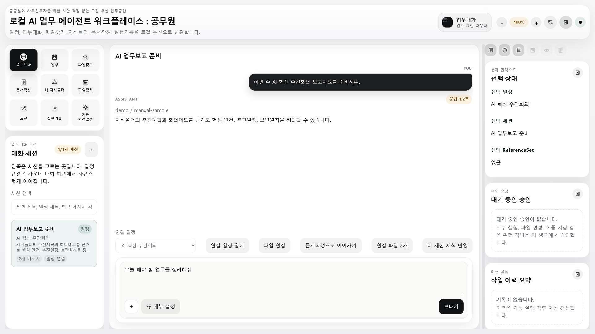
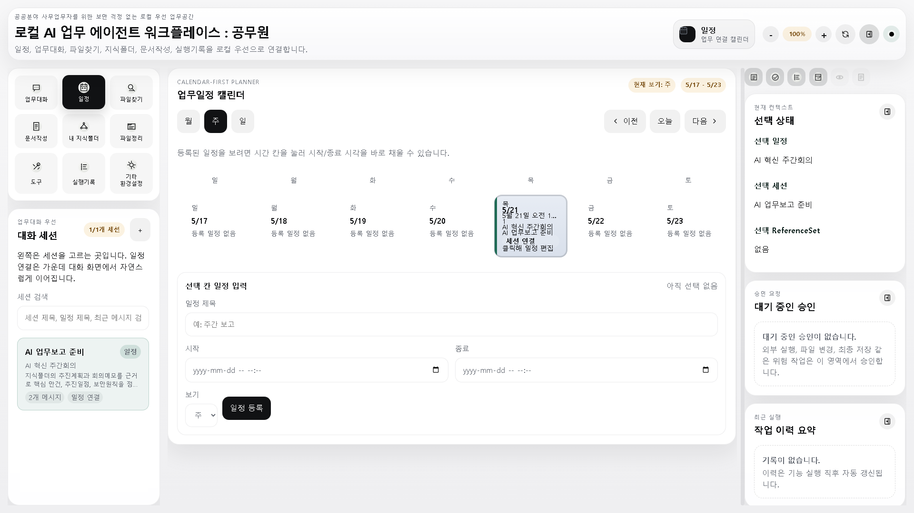
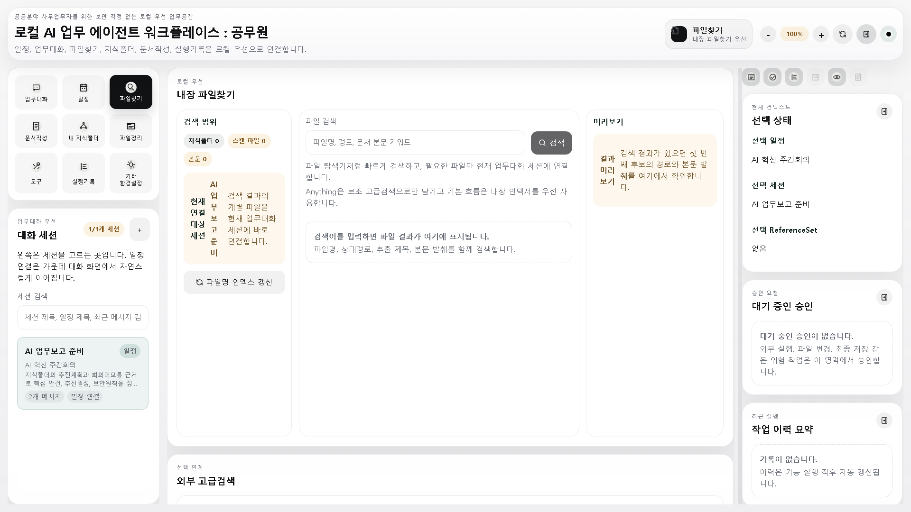
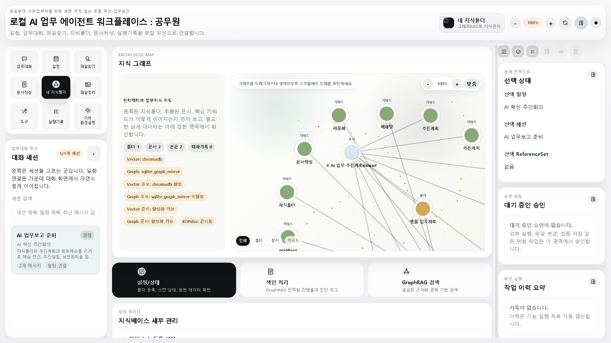
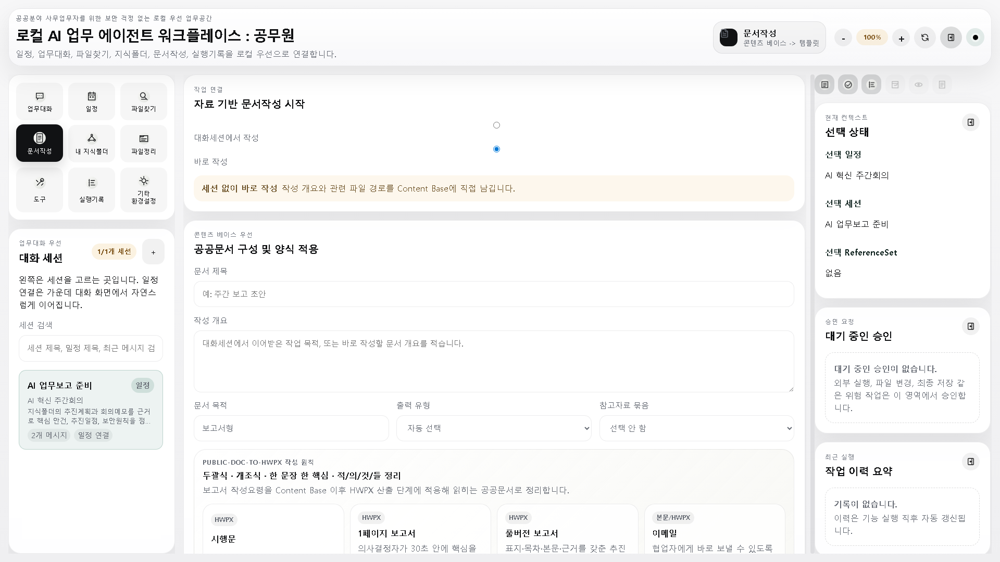
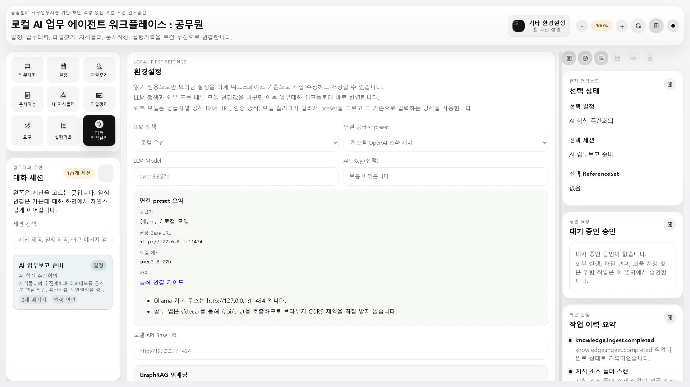
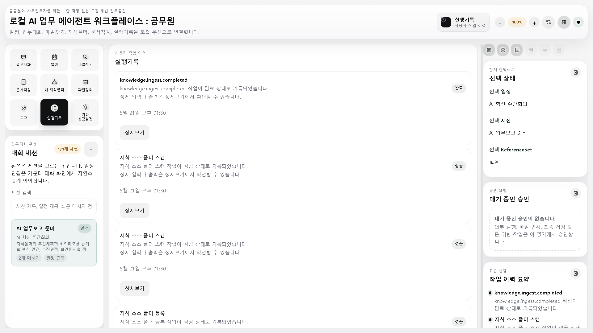

Gongmu User Manual
로컬 AI 업무 에이전트
사용자 매뉴얼
Gongmu는 공공분야 사무업무자가 업무대화, 일정, 파일찾기, 지식폴더, 문서작성을 한 작업공간에서 안전하게 연결해 쓰도록 만든 Windows 업무 워크플레이스입니다.
Overview
이 프로그램은 무엇을 위해 만들었나요?
Gongmu의 목적은 공공기관 사무업무자가 매일 반복하는 자료 찾기, 일정 확인, 업무대화, 보고서 작성, 실행기록 확인을 하나의 로컬 우선 시스템으로 묶는 것입니다.
- 1업무대화에서 할 일을 묻거나 작업 지시를 시작합니다.
- 2파일찾기로 필요한 로컬 문서를 찾아 세션에 연결합니다.
- 3내 지식폴더에서 업무 폴더를 스캔해 GraphRAG 지식베이스를 만듭니다.
- 4문서작성에서 대화와 연결자료를 바탕으로 보고서를 만듭니다.
| 메뉴 | 사용 목적 |
|---|---|
| 업무대화 | AI와 대화하며 업무를 정리하고 작업 세션을 저장합니다. |
| 일정 | 월/주/일 캘린더에서 일정을 등록하고 대화 세션과 연결합니다. |
| 파일찾기 | 로컬 PC의 파일명을 검색하고 업무대화에 연결합니다. |
| 문서작성 | 업무대화, 파일, Reference Set을 바탕으로 Content Base와 산출물을 만듭니다. |
| 내 지식폴더 | 지정 폴더를 스캔해 GraphRAG 기반 업무지식 지도를 구성합니다. |
| 실행기록 | 최근 작업과 오류, 승인 내역을 확인합니다. |
| 기타 환경설정 | 로컬/내부/외부 모델, 개인화, GraphRAG backend를 설정합니다. |
Install
처음 설치하는 방법
설치 전 준비
- 1관리자 또는 설치 권한이 있는 Windows x64 PC를 준비합니다.
- 2배포받은 폐쇄망 패키지 zip을 원하는 폴더에 풉니다.
- 3
Gongmu_0.1.0_x64-setup.exe를 실행합니다. - 4설치가 끝나면 시작 메뉴 또는 바탕화면에서 Gongmu를 실행합니다.
첫 실행 후 확인할 것
- 1우측 상단의 업무엔진 신호등이 정상인지 확인합니다.
- 2업무대화 입력창에 간단한 문장을 입력해 화면이 정상 반응하는지 확인합니다.
- 3환경설정에서 사용할 모델 공급자와 endpoint를 저장합니다.
- 4내 지식폴더에서 업무자료 폴더를 등록하고 스캔을 시작합니다.

Chat
업무대화: 작업의 출발점

기본 사용법
- 1좌측 세션 목록의 + 버튼으로 새 업무대화를 만듭니다.
- 2입력창에 질문이나 작업 지시를 입력합니다. Enter는 전송, Shift+Enter는 줄바꿈입니다.
- 3파일 첨부 버튼으로 이미지나 문서를 붙일 수 있습니다.
- 4필요하면 일정 연결, 파일 연결, 문서작성으로 이어가기 버튼을 사용합니다.
Schedule
업무일정 캘린더 사용하기
월/주/일 화면
일정 화면은 월, 주, 일 단위로 전환할 수 있습니다. 일정이 있는 칸은 별도 색으로 강조되며, 긴 제목은 줄여서 표시됩니다. 자세한 내용은 칸에 마우스를 올리거나 일정을 클릭해서 확인합니다.
- 1월/주/일 보기 중 필요한 방식을 선택합니다.
- 2원하는 날짜 또는 시간 칸을 클릭합니다.
- 3제목, 일시, 설명을 입력하고 저장합니다.
- 4필요하면 해당 일정과 업무대화 세션을 연결합니다.

Files
파일찾기와 세션 연결

파일을 업무에 붙이는 방식
- 1검색어를 입력해 관련 파일을 찾습니다.
- 2결과에서 업무에 필요한 파일을 선택합니다.
- 3현재 업무대화 세션에 연결합니다.
- 4문서작성 단계에서 연결 파일을 근거자료로 활용합니다.
Knowledge
내 지식폴더와 GraphRAG
무엇을 하는 기능인가요?
사용자가 지정한 업무 폴더를 스캔해 문서 메타데이터, 본문, chunk, 키워드, 관계를 정리합니다. 이후 업무대화나 지식검색에서 출처가 있는 답변을 만들 때 사용합니다.
- 1설정/상태에서 지식 소스 폴더를 등록합니다.
- 2색인처리에서 스캔과 GraphRAG 인덱싱을 실행합니다.
- 3GraphRAG 검색에서 질문하고 출처 문서를 확인합니다.
- 4그래프에서 문서, 키워드, 관계를 클릭해 세부 내용을 확인합니다.

Documents
문서작성: 대화에서 보고서로

문서작성 흐름
- 1업무대화 세션을 선택하거나 직접 작성 개요를 입력합니다.
- 2시행문, 1페이지 보고서, 풀버전 보고서, 이메일 중 출력 유형을 고릅니다.
- 3연결 파일과 Reference Set을 확인합니다.
- 4Content Base를 생성한 뒤 최종 저장 요청을 진행합니다.
Content Base -> Template -> 최종 산출입니다. 먼저 근거와
구조를 정리한 다음, 지정 서식에 맞춰 산출물을 만듭니다.
Settings
모델 연결과 환경설정
지원하는 연결 방식
| 구분 | 예시 | 필요 입력값 |
|---|---|---|
| 로컬 | Ollama | endpoint, model name |
| 내부 서버 | 기관 내부 OpenAI-compatible API | base URL, model, API key |
| 외부 모델 | OpenAI, OpenRouter, Claude, Gemini, NVIDIA NIM | provider, model, API key, endpoint |

Troubleshooting
문제가 생겼을 때 확인할 곳

자주 확인하는 항목
- 1업무엔진 미연결: 우측 상단 신호등을 눌러 시작 또는 재시작합니다.
- 2LLM 응답 실패: 환경설정에서 endpoint, model, API key를 다시 확인합니다.
- 3지식검색 품질 낮음: 색인처리 탭에서 실패 파일과 추출 품질 로그를 확인합니다.
- 4문서작성 실패: Content Base가 최신 입력값 기준으로 다시 생성되었는지 확인합니다.
Quick Reference